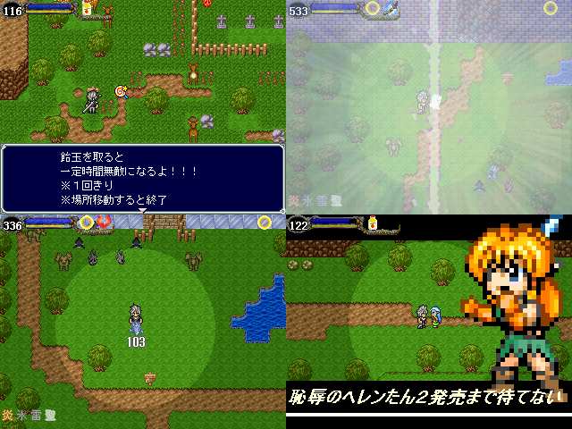

| No,001 【Ancient Ruler】 |
| ダウンロード（7.40MB） 修正ファイル（5.45KB）2007/1/16 23:30 |
 |
| 【ＨＮ】 ◆AiM/lp.KLE 【ジャンル】 伝説でもなく 君と響きあうわけでもなく 君が生まれ変わるわけでもなく 永遠と絆もなく 運命という名であるわけでもなく 魂を呼び覚ますわけでもなく 生まれた意味を知るわけでもなく ギャグもなく シリアスでもなく 王道でもなく 決してピュアでもなく 甘くもなく辛くもなく ただただ突き進むRPG 【コメント】 平均２～３秒で終わる 画面切り替えなしシームレス自作戦闘と 果てしない厨臭さがうりです。 どうか最後まで遊んで下さい。 |
| 【管理人コメント】 体験版も出していた作品 楽しみでウヒョーーーーーーーーーーー |